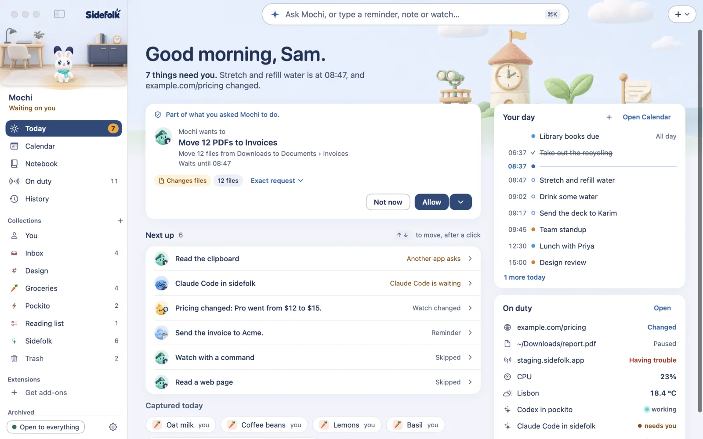
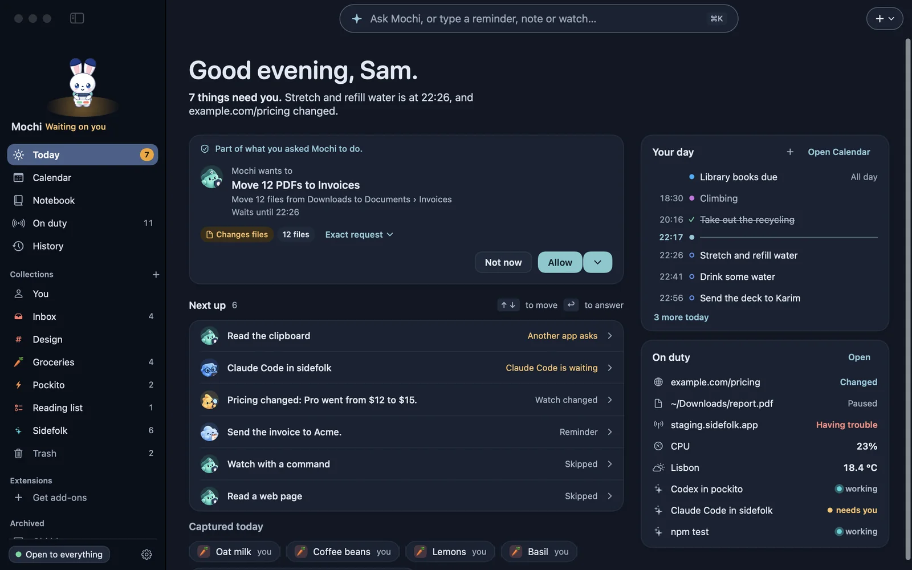

A small companion that lives on your Mac's desktop.
It remembers, reminds and keeps watch, and your AI agents can talk to it.
0.1.0 isn't released yet. What isn't done yet. macOS 15 or later, Apple silicon.
Always in the corner of your eye
Its light says how things are.
You can tell at a glance, without opening anything. Between tasks it has a life of its own, and it holds still while you type.
Meet the folk
A few helpers stand beside it.
Tell it things in plain words, with ⌘⇧Space or a click. The basics finish on your Mac in a moment, with no AI. Without AI it understands English; with one, ask in any language.
It tells you on time.
Natural times and repeats, snooze and done, a summary of what you missed, and a morning brief.
It keeps an eye out.
A page, meaningful changes only. A site going down or coming back. A file appearing, a program finishing, for as long as Sidefolk is running.
It remembers what you tell it.
Notes, ideas, lists and links go into a notebook that stays on your Mac. Drop a file or a link on the companion to save it.
Your agents can reach you.
Claude Code, Codex and any MCP client can leave a note or ask a question. Files, the clipboard, the web and commands are never offered to them, and they can never answer an approval.
It asks first, as often as you choose.
A permission slip says what it touches. Everything it did is in History, and most of it can be undone.
In the app
One page for your whole day.
Today shows what needs you, what's on your day, and what your companion is watching.


Extensions
Give your companion more to do.
Extensions bring new tools, things to watch, pages in Home, tiles on Today, and games. Pick what you want from the gallery, and leave the rest.
Also in the gallery: Keep Awake, PDF Tools, Images, Git, Feeds and more.
Teach your companion a routine.
Say what you repeat, if you've connected an AI, or build it step by step. Sideflow builds routines that can use Sidefolk's tools, your other extensions and connected MCP servers, hand your companion a job, and start when something happens. MCP servers and anything that can run programs ask you on a card every time. Other steps run on their own only after you've read and allowed the exact plan, and each action is listed in History.
Find it in Get add-ons: turn on Show snapshots. Needs Sidefolk snapshot 1075 or newer.
- You can practise it first. A practice run reads for real, changes nothing, and says what it would have done.
- It runs while your Mac does. A routine needs Sidefolk running and your Mac awake.
- Every run is a story. You can read what happened, with a way forward when it stops.
A flow after its practice run.
Build your own
If it isn't there, make it.
An extension is a folder with a manifest and a small program that speaks MCP. Ask for one or write one, or bring an MCP server you already use.
With an AI connected, ask for something it can't do yet. It describes the extension, waits for your yes, writes a draft and tries it with every permission removed. Nothing is installed until you click Install.
The smallest working extension is about 50 lines of Python. Copy it to start, or use the skill for Claude Code or Codex, then choose Settings › Add-ons › Install from folder. For now an extension can't keep an API key, and it gets the whole internet or none of it.
Add one you already use in Settings. It runs outside Sidefolk's sandbox, with your full permissions, and it's labelled that way.
Make it yours
Pick a companion and give it a name.
Mochi and Spark are built in, in 3D or 2D, and ten more wait in the gallery. In ten languages.
Private by default
What it keeps stays on your Mac.
Everything it keeps is in one folder. Some things do leave, such as your request to the AI you chose, and the privacy page says exactly what, and when.
Say hello to Mochi.
Signed test builds are on GitHub, and once installed Sidefolk finds the next ones itself.